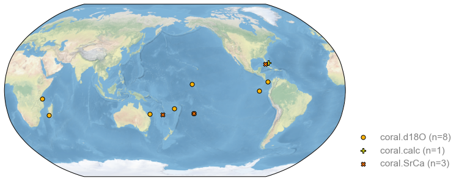
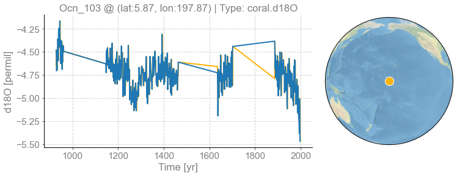
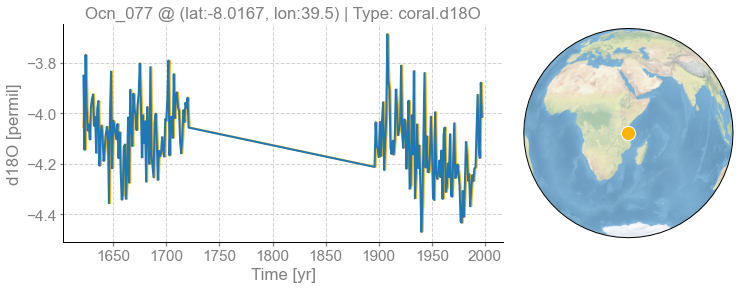

[1]:
%load_ext autoreload
%autoreload 2
import cfr
import pandas as pd
import LMRt
[2]:
job_old = pd.read_pickle('./data/job.pkl')
[3]:
for pid, pobj in job_old.proxydb.records.items():
print(pid, pobj.R)
Ocn_065 0.0008323822064756162
Ocn_075 0.02103204860257029
Ocn_096 0.0035625380364406154
Ocn_101 0.0010923785091157463
Ocn_070 0.0012085844059106612
Ocn_103 0.02282134449078085
Ocn_077 0.01997241350815044
Ocn_122 0.017881671983774772
Ocn_138 None
Ocn_095 0.015279238443397347
Ocn_104 0.04723797129863783
Ocn_125 0.0216975793880162
Ocn_087 0.03191761722274579
[4]:
import cfr
[5]:
job = cfr.ReconJob(verbose=True)
print(job)
>>> job.configs:
{}
<cfr.reconjob.ReconJob object at 0x107a95dc0>
[6]:
job.load_proxydb('./data/pages2k_updated_Palmyra_dataset.pkl', verbose=True)
>>> job.configs["proxydb_path"] = ./data/pages2k_updated_Palmyra_dataset.pkl
>>> 692 records loaded
>>> job.proxydb created
[7]:
pids = [
'Ocn_065',
'Ocn_075',
'Ocn_096',
'Ocn_101',
'Ocn_070',
'Ocn_103',
'Ocn_077',
'Ocn_122',
'Ocn_095',
'Ocn_104',
'Ocn_125',
'Ocn_087',
]
job.filter_proxydb(by='pid', keys=pids)
fig, ax = job.proxydb.plot()

[8]:
job.annualize_proxydb(months=[12, 1, 2], ptypes=['coral'], verbose=True)
>>> job.configs["annualize_proxydb_months"] = [12, 1, 2]
>>> job.configs["annualize_proxydb_ptypes"] = ['coral']
Annualizing ProxyRecord: 100%|██████████| 12/12 [00:00<00:00, 23.72it/s]
>>> 12 records remaining
>>> job.proxydb updated
[9]:
import numpy as np
for pid, pobj in job.proxydb.records.items():
try:
print(np.sum(pobj.value - job_old.proxydb.records[pid].value))
except:
print(pid)
0.0
0.0
0.0
0.0
0.0
Ocn_103
Ocn_077
0.0
0.0
0.0
0.0
0.0
[10]:
fig, ax = job.proxydb.records['Ocn_103'].plot()
pobj = job_old.proxydb.records['Ocn_103']
ax['ts'].plot(pobj.time, pobj.value)
[10]:
[<matplotlib.lines.Line2D at 0x2844b64f0>]

[14]:
pid = 'Ocn_103'
fig, ax = job.proxydb.records[pid].plot()
pobj_old = job_old.proxydb.records[pid]
pobj = job.proxydb.records[pid]
ax['ts'].plot(pobj_old.time, pobj_old.value)
print(np.size(pobj_old.value), np.size(pobj.value))
print(pobj_old.time[0], pobj.time[0])
print(pobj_old.time[-1], pobj.time[-1])
print(np.sum(pobj_old.value - pobj.value))
531 534
928 928.0
1997 1998.0
---------------------------------------------------------------------------
ValueError Traceback (most recent call last)
/Users/fzhu/Github/cfr/docsrc/notebooks/compare.ipynb Cell 11' in <cell line: 9>()
<a href='vscode-notebook-cell:/Users/fzhu/Github/cfr/docsrc/notebooks/compare.ipynb#ch0000013?line=6'>7</a> print(pobj_old.time[0], pobj.time[0])
<a href='vscode-notebook-cell:/Users/fzhu/Github/cfr/docsrc/notebooks/compare.ipynb#ch0000013?line=7'>8</a> print(pobj_old.time[-1], pobj.time[-1])
----> <a href='vscode-notebook-cell:/Users/fzhu/Github/cfr/docsrc/notebooks/compare.ipynb#ch0000013?line=8'>9</a> print(np.sum(pobj_old.value - pobj.value))
ValueError: operands could not be broadcast together with shapes (531,) (534,)

[11]:
pid = 'Ocn_077'
fig, ax = job.proxydb.records[pid].plot()
pobj_old = job_old.proxydb.records[pid]
pobj = job.proxydb.records[pid]
ax['ts'].plot(pobj_old.time, pobj_old.value)
print(np.size(pobj_old.value), np.size(pobj.value))
print(pobj_old.time[0], pobj.time[0])
print(pobj_old.time[-1], pobj.time[-1])
print(np.sum(pobj_old.value - pobj.value[1:]))
202 203
1622 1622.0
1997 1998.0
0.0

[ ]: